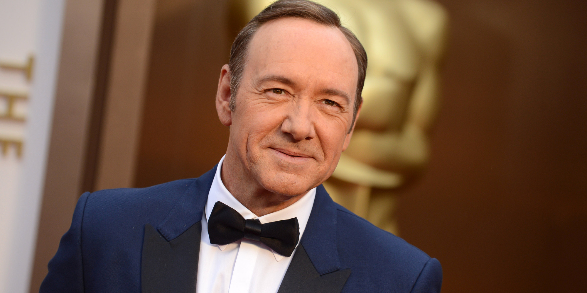

Kevin Spacey
Nació en South Orange, en el estado de Nueva Jersey, con el nombre Kevin Spacey Fowler. Es el hermano menor de los tres hijos de un matrimonio formado por un padre redactor técnico, y una madre secretaria. El trabajo del padre motivó que la familia se mudara en varias ocasiones, viviendo en distintas localidades del país. Finalmente se establecieron en California, donde el pequeño Kevin puso de manifiesto su carácter revoltoso. Sus padres le enviaron a un internado dirigido por militares, de donde fue expulsado a los pocos meses. Ingresó entonces en un colegio del Valle de San Fernando, cercano a Los Ángeles. Allí Spacey se encontró a gusto y comenzó a participar en el teatro amateur de la escuela

Finalizada la escuela, y tras una breve estancia en un colegio de actuación de Los Ángeles, Spacey marchó a Nueva York y comenzó a estudiar interpretación en el prestigioso Juilliard School. A los dos años estaba tan ansioso por actuar, que abandonó el colegio antes de recibirse y se incorporó al Festival de Shakespeare de Nueva York.
En 1981, Spacey apareció por primera vez en el teatro, interpretando a un mensajero en la obra de Shakespeare Enrique VI. Al año siguiente actuó Los espectros, en un drama de Ibsen en Broadway, a la que seguirían El misántropo (1984), de Molière, y Largo viaje hacia la noche (1986), de Eugene O'Neill. Se dio cuenta que su camino estaba en el cine, pero au textbion así, Spacey siguió actuando regularmente en el teatro y ganó en 1991 un premio Tony, el equivalente a los Óscar en el teatro, gracias a su interpretación en Perdidos en Yonkers, de Neil Simon